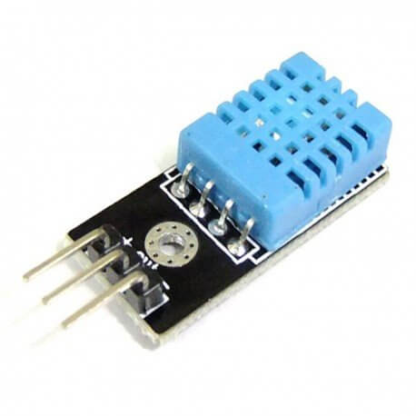

DHT11
El DHT11 es un sensor que permite realizar la medición simultánea de temperatura y humedad.
Estos sensores disponen de un microprocesador que realiza la medición, dando su valor mediante una señal digital, no como el LM35, por tanto es menos sensible al ruido. Al ser una señal digital es muy sencillo adquirir esta información por Arduino. Para adquirir esta información lo haremos a través de instrucciones que forman parte de una librería.
Las precisión y capacidades de medición del DHT11 son pobres:
- Medición de temperatura entre 0 a 50, con una precisión de 2ºC
- Medición de humedad entre 20 a 80%, con precisión del 5%
- Frecuencia de muestreo de 1 muestras por segundo (1 Hz)